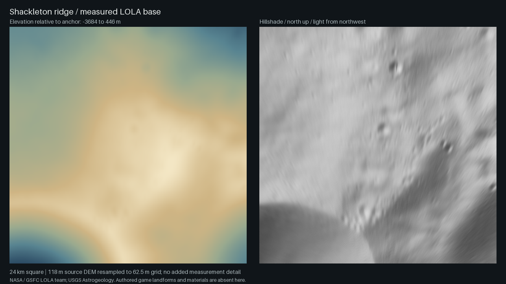
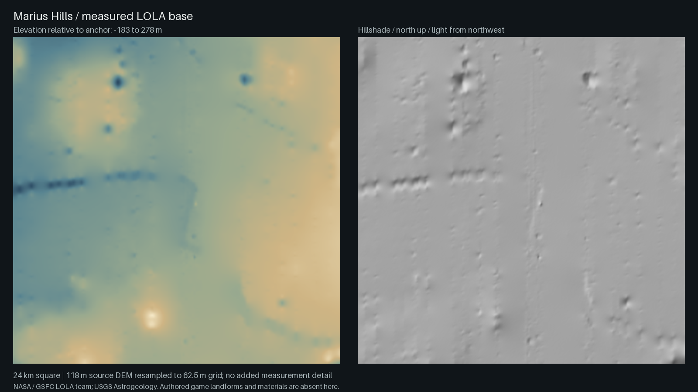

Moon / data to game terrain
Polar ridges.
Volcanic rilles.
Two more Moon studies from the measured-base workflow, with original textured game captures, source heightfields and review prompts.
Both preserved regions use the 118 m LOLA global DEM. LROC imagery and measurements inform landmark geometry, but these are not locally measured high-resolution pit or rille-wall meshes.
Shackleton ridge
Sunlit polar ridges and shadowed crater basins. Measured large-scale relief supports authored terraces, cold traps and construction sites.

Inspect measured relief in 3D · Textured game captures and data lineage
Marius Hills / sinuous rille
Measured mare and dome-field relief with an authored sinuous channel, pit, crossing spans and boulder-lined banks.

Inspect measured relief in 3D · Textured game captures and data lineage